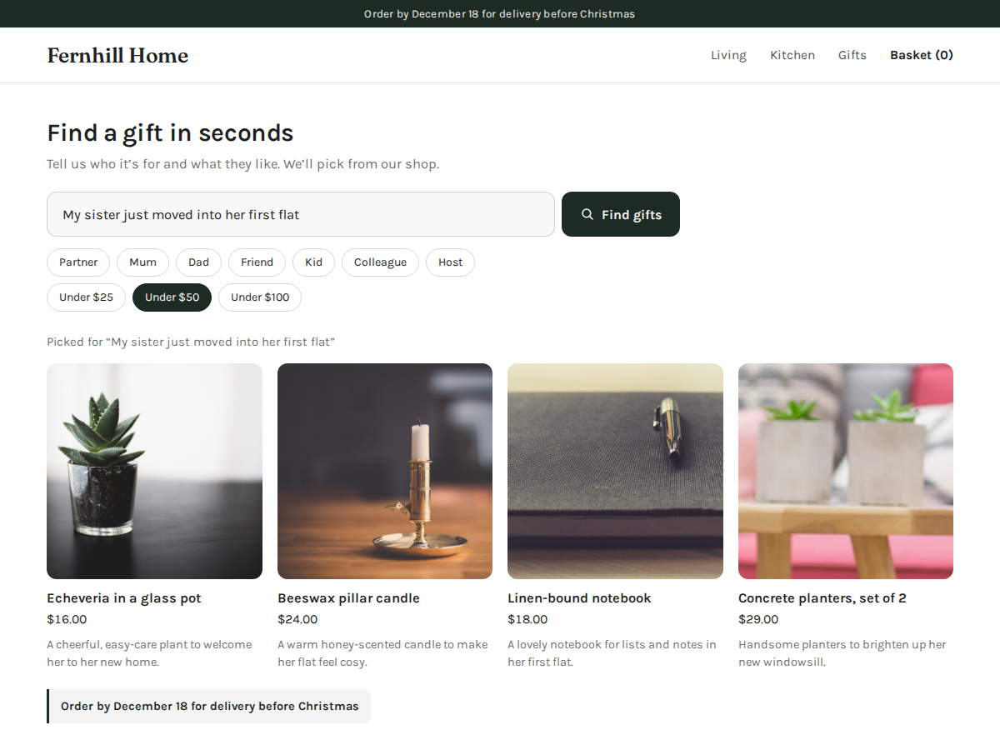

Gift Finder
Shoppers describe it, your store suggests it
- Shoppers type who it's for and get your products
- Shows only products you sell and have in stock
- Who-for and budget buttons (Premium)
- See what shoppers wanted that you don't stock

What it does
A shopper types "my dad, he loves cooking, under $50" and gets three products from your shop, each with its photo, price and a link to the product page. Gift Finder reads your visible, in-stock store products and picks the ones that fit the person. It only ever shows products you really sell.
Put it on your shop or home page and it works at once with your own products and your site's font. You choose the heading, the hint in the search box, the button colour and a few example searches that a shopper can tap. Each month includes a number of smart searches. When they are used up, shoppers still get plain word matches from your catalog, so the box never stops working.
Premium raises the limit from 30 to 1,500 searches a month and shows six products, each with one short line on why it suits that person. Shoppers can tap Mum, Dad, Partner or Friend and a price limit instead of typing them. You can add an order-by line for Christmas delivery, and your dashboard lists what shoppers asked for that you don't stock yet: handy when you plan the next order.
Only the shopper's words and your product names, prices and short descriptions go to the AI model. No names, emails or cookies.
Price
Free
- 30 smart searches a month
- 3 products per search
- Your heading, examples, button colour
- Small credit link
Premium
$6/month, yearly $5/month (~17% off)
- 1,500 smart searches a month
- 6 products with a why-it-fits line
- Who-for, budget buttons, order-by note
- Remove the credit link